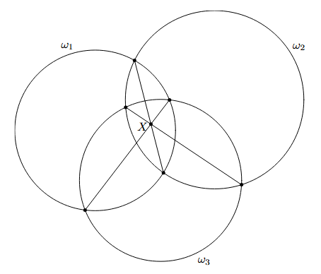
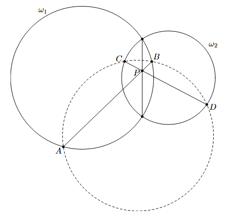

1. Linearity
In a seemingly abrupt turn, we will now define the notion of linearity, specifically for functions that map $\mathbb{R}^2$ to $\mathbb{R}$.
Definition 1.1
A function $f:\mathbb{R}^2\rightarrow\mathbb{R}$ with elements of $\mathbb{R}^2$ interpreted as points is said to be linear if for any points $A$, $B$ and $P$ on line $AB$, that
$$f(P)=\frac{PB}{AB}\cdot f(A)+\frac{PA}{BA}\cdot f(B)$$
where the lengths are directed.
Essentially, given the values of $f$ at $A$ and $B$, we scale $X$ by an appropriate "similarity" to $A$ and $B$. Note that this definition should make some sense as
$$
\overrightarrow{P}=\frac{PB}{AB}\cdot\overrightarrow{A}+\frac{PA}{BA}\cdot\overrightarrow{B}
$$
in terms of vectors.
Here is the theorem that makes this relevant (and so powerful).
Theorem 1.2 (Linearity of Power of a Point)
Let $\omega_1$ and $\omega_2$ be two circles. The function $f:\mathbb{R}^2\rightarrow\mathbb{R}$ defined by
$$f(P)=\text{Pow}(P,\omega_1)-\text{Pow}(P,\omega_2)$$
is linear. Moreover, $f$ is constant on lines perpendicular to the line connecting the centers of $\omega_1$ and $\omega_2$.
Proof. We use Cartesian coordinates and rotate the circles such that their centers lie on the $x$-axis. Let $\omega_1$ be centered at $(a,0)$ and $\omega_2$ be centered at $(b,0)$ and their radii be $r_1$ and $r_2$, respectively. Then if $P=(x,y)$ we have
\begin{align*}
f(P)&=(x-a)^2+y^2-{r_1}^2-(x-b)^2-y^2+{r_2}^2 \\
&=(2b-2a)x+(a^2-b^2+{r_2}^2-{r_1}^2).
\end{align*}
Then set $c=2b-2a$ and $d=a^2-b^2+{r_2}^2-{r_1}^2$ so $f(P)=cx+d$. We let $A=(a_1,a_2)$, $B=(b_1,b_2)$, and $P=(p_1,p_2)$. Let $A'$, $B'$, $P'$ be the projections of $A$, $B$, $P$ on the $x$-axis, respectively. Then $\frac{PB}{AB}=\frac{P'B'}{A'B'}=\frac{b_1-p_1}{b_1-a_1}$ and $\frac{PA}{BA}=\frac{P'A'}{B'A'}=\frac{a_1-p_1}{a_1-b_1}$, so what we want to show is
\begin{align*}
cp_1+d&=\frac{b_1-p_1}{b_1-a_1}\cdot(ca_1+d)+\frac{a_1-p_1}{a_1-b_1}\cdot(cb_1+d) \\
(cp_1+d)(b_1-a_1)&=(b_1-p_1)(ca_1+d)-(a_1-p_1)(cb_1+d) \\
(cp_1+d)(b_1-a_1)&=a_1b_1c+b_1d-a_1p_1c-p_1d-a_1b_1c-a_1d+b_1cp_1+p_1d \\
(cp_1+d)(b_1-a_1)&=b_1d-a_1p_1c-a_1d+b_1cp_1 \\
(cp_1+d)(b_1-a_1)&=cp_1(b_1-a_1)+d(b_1-a_1)
\end{align*}
which is obviously true. The second part comes from the fact that $f$ does not depend on $y$.
We can now define the radical axis.
Theorem 1.3 (Radical Axis)
Let $\omega_1$ and $\omega_2$ be two circles and $P$ be a point. Then the locus of points with $\text{Pow}(P,\omega_1)=\text{Pow}(P,\omega_2)$ is a line called the radical axis of $\omega_1$ and $\omega_2$. If the circles intersect, the radical axis is the line through the points common to the two circles.
Proof. Let $f(P)=\text{Pow}(P,\omega_1)-\text{Pow}(P,\omega_2)$. It clearly asks for the set of all points $P$ such that $f(P)=0$, which we know is a line perpendicular to the line connecting the centers of $\omega_1$ and $\omega_2$. Moreover, if a point $P$ is on both circles then $\text{Pow}(P,\omega_1)=\text{Pow}(P,\omega_2)=0$ and it must lie on the radical axis.
Similarly, the radical center can now be defined.
Theorem 1.4 (Radical Center)
Let $\omega_1$, $\omega_2$, and $\omega_3$ be three circles whose centers are not collinear. Then there exists a point called the radical center of the three circles lying on the pairwise radical axes of the circles.

Proof.
Since the centers are not collinear, no two of the radical axes are parallel (why?). This means we can intersect the radical axis of $\omega_1$ and $\omega_2$ with the radical axis of $\omega_2$ and $\omega_3$ at some point $X$, from where $\text{Pow}(X,\omega_1)=\text{Pow}(X,\omega_2)=\text{Pow}(X,\omega_3)$ hence $\text{Pow}(X,\omega_1)=\text{Pow}(X,\omega_3)$ and $X$ also lies on the radical axis of $\omega_1$ and $\omega_3$, as desired.
An adjacent theorem (that is also sometimes just referred to as radical center) is the following.
Theorem 1.5
Let $\omega_1$ and $\omega_2$ be circles, $A$, $B$ be points on $\omega_1$, and $C$, $D$ be points on $\omega_2$. Then if the intersection of $AB$ and $CD$ lies on the radical axis of $\omega_1$ and $\omega_2$, $ABCD$ is cyclic.

Proof.
Let this intersection be $P$. Then
$$
PA\cdot PB=\text{Pow}(P,\omega_1)=\text{Pow}(P,\omega_2)=PC\cdot PD
$$
so $ABCD$ is cyclic.